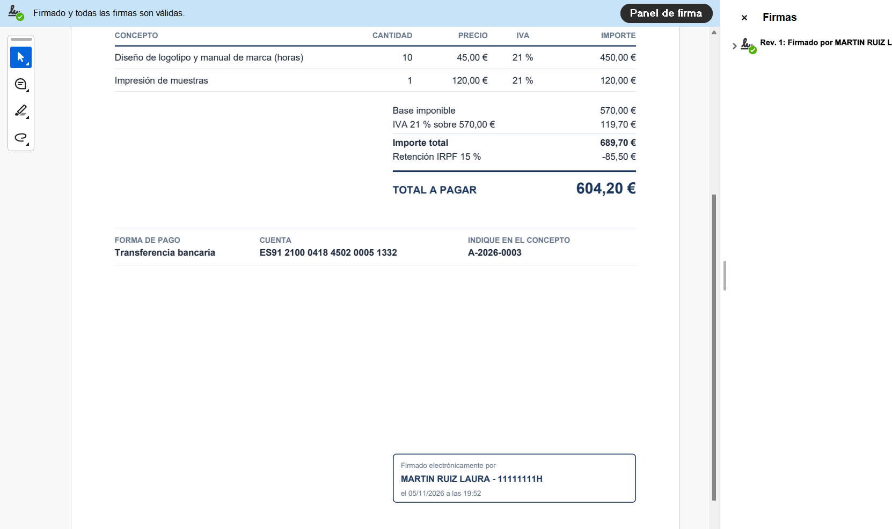
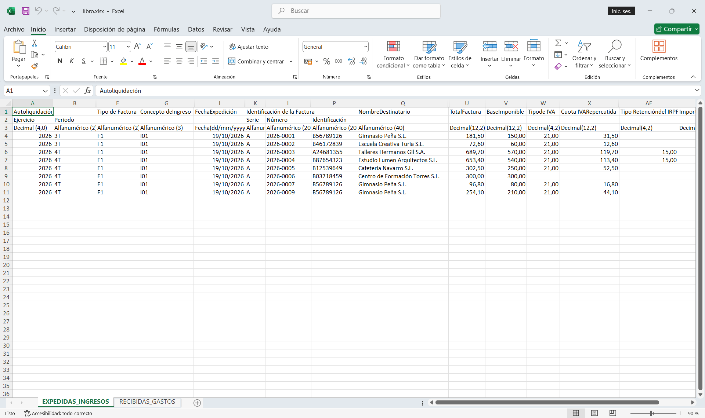
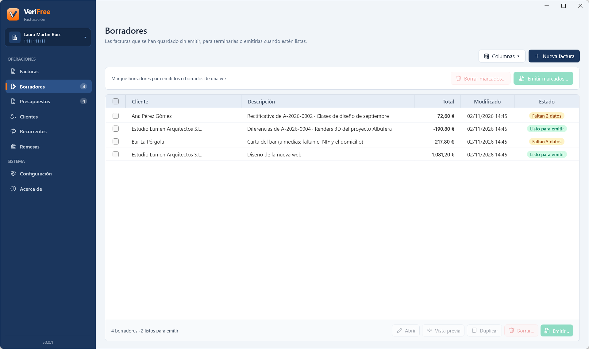
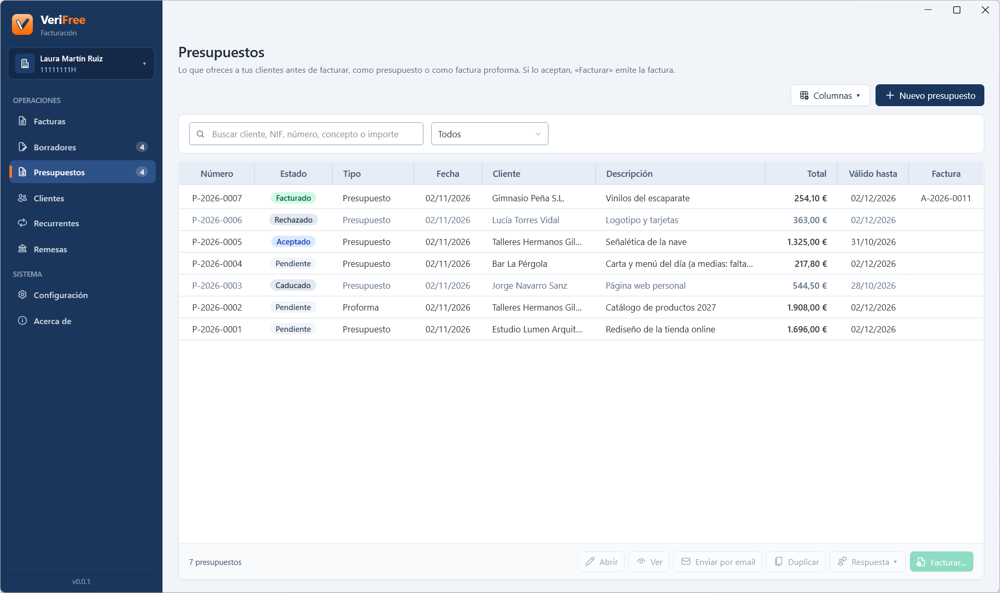
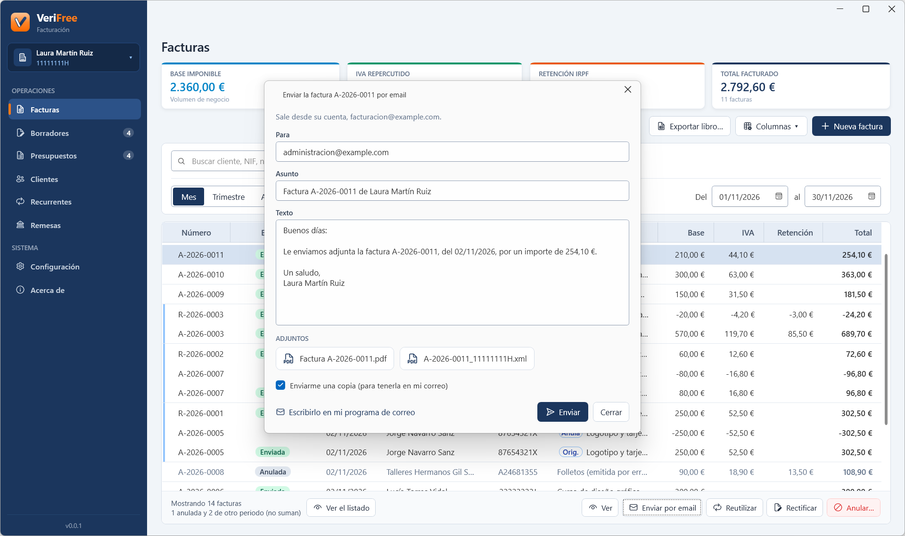
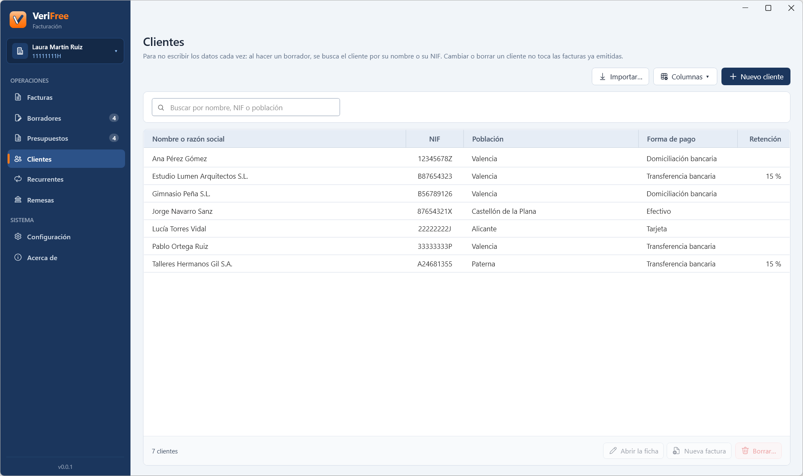
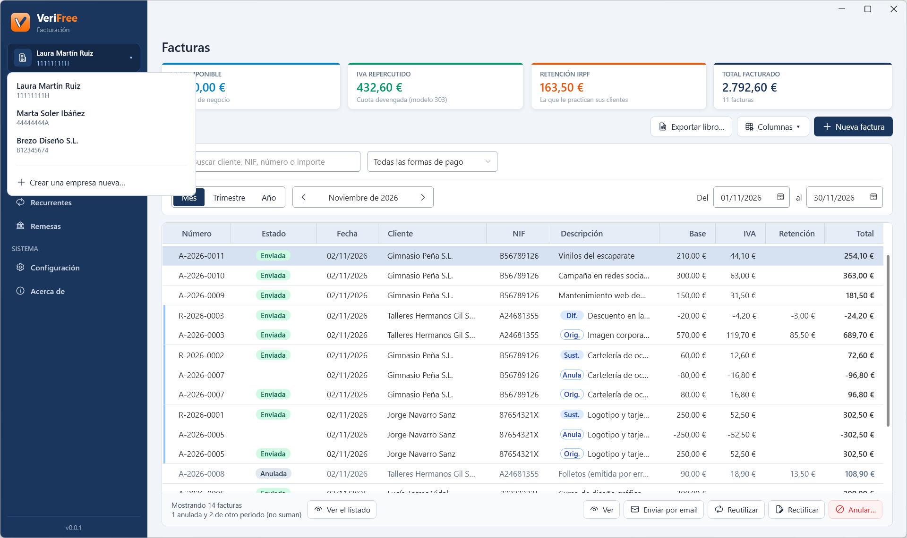
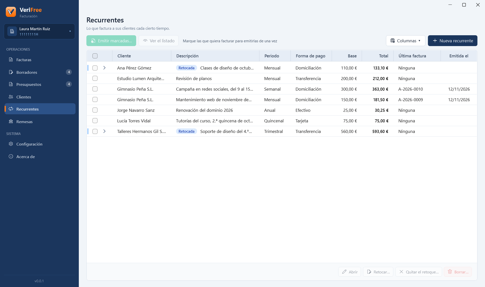
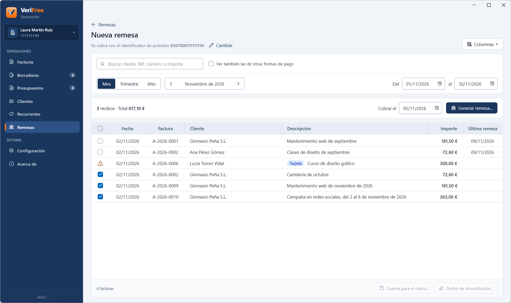

Grabado en el entorno de pruebas de la AEAT.
Remisión automática VERI*FACTU a la AEAT
Emites la factura y VeriFree la envía sola a Hacienda con tu certificado, encadenada a la anterior para que nadie pueda tocarla después. Lo mismo con rectificativas y anulaciones. ¿Se cae internet o la AEAT va lenta? Lo reintenta solo y te avisa de lo que queda pendiente.
Factura electrónica estructurada
Cada factura genera también su versión electrónica, firmada digitalmente con tu certificado, en UBL, el formato que ha fijado la AEAT (Orden HAC/1028/2026). Se firma en segundo plano mientras sigues trabajando y se archiva en una carpeta, por año y mes.

PDF firmado digitalmente
¿Tu cliente prefiere el PDF? «Guardar firmada › PDF firmado…» lo firma con tu certificado, como la factura electrónica. Al abrirlo en Acrobat Reader sale «Firmado y todas las firmas son válidas», y cualquier cambio posterior rompe la firma.

Libro registro oficial en Excel
Un clic y tienes el libro registro de facturas expedidas en el formato de la AEAT: un Excel con el IVA y el IRPF, listo para mandárselo a tu asesoría.

Borradores y vista previa
Prepara la factura con calma y guárdala como borrador hasta que esté bien: mientras escribes, VeriFree te dice qué falta para emitirla y la vista previa te enseña cómo quedará, marcada como documento interno. Varios borradores listos se emiten de una vez. ¿Lo mismo para otro cliente? Reutiliza tu última factura: te sirve de plantilla.

Presupuestos y facturas proforma
Haz el presupuesto o la factura proforma con su número (P-2026-0001) y su fecha de validez, y mándalo en PDF por email. Si el cliente acepta, «Facturar» emite la factura directamente y la deja ligada al presupuesto, que se conserva como recomienda la AEAT.

Envío por email
Manda cada factura o presupuesto a tu cliente con un clic, desde tu propia cuenta de correo, con el PDF adjunto (y, en las facturas, también la factura electrónica) y el texto de tu plantilla. ¿Prefieres tu programa de correo? VeriFree te prepara el mensaje para enviarlo desde allí.

Agenda de clientes
Guarda tus clientes con sus datos, su forma de pago y su retención, o tráetelos de golpe desde el Excel o el CSV que exporta tu programa anterior. Al preparar una factura, buscas al cliente por su nombre o su NIF y se rellena solo. Cambiar un cliente nunca toca las facturas ya emitidas.

Multiempresa ilimitada
¿Llevas varias empresas o autónomos? Todos en el mismo programa, cada uno con sus datos, su numeración y su configuración, sin mezclarse. Para facturar, cada empresa o autónomo necesita su Licencia Oficial, y desde la segunda, a mitad de precio.

Facturas recurrentes
Guarda lo que facturas cada semana, quincena, mes, trimestre o año, con su cliente, sus conceptos y su vencimiento; la descripción se completa sola con el periodo («Mantenimiento de octubre de 2026»). Marcas las que quieres facturar y las emites todas de una vez, y cada una dice cuándo salió la última. ¿Cambia algo solo una vez? Retocas la próxima.

Remesas de adeudos SEPA
Marca las facturas domiciliadas y genera el fichero de adeudos directos SEPA, en el formato que piden los bancos españoles, para subirlo a tu banco, con su listado en PDF. Guarda la orden de domiciliación de cada cliente, con su referencia y su fecha de firma (y te da el modelo para que la firme). Cada factura dice la fecha de cobro de su última remesa.